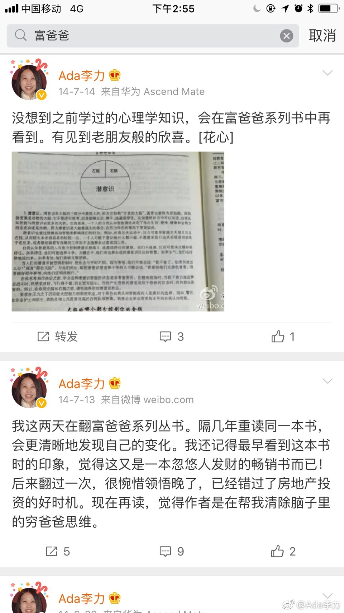

#创业#走到今天，有三本书可以看成是影响自己的里程碑。
第一个是《穷爸爸富爸爸》，最早看到时很不以为然的，后来又读到时觉得说得有道理。它至少让我认识到了大众认可的上个好大学找个好工作的路子，就是他穷爸爸的结局。
第二个是篇文章《降维打击》，作者现身说法，在互联网中创业也曾冲到App Store的前一名，狂喜过后计算收益，发现跟农民工收入差不多。后来作者转向传统的婴儿拍照摄影，发现只要在产品和服务上提高一些，就轻松碾压那些原来行业里不思进取的同行。老实说，就是这篇文章，让我下了决心，从IT行业转向医疗行业。
第三个就是刚翻完的《百万富翁快车道》，整本书立意跟《穷爸爸富爸爸》差不多，不过采用了另外一种叙述方式。我觉得它是里程碑，是因为读《穷爸爸富爸爸》时，我是带着疑虑的，总想找出对方的纰漏，因为跟我之前的观念差异太大了。但现在读类似的《百万富翁快车道》时，则频频点头，就是这么回事，说得太对了。
每否定一次过去的自己，就是个里程碑。
第一个是《穷爸爸富爸爸》，最早看到时很不以为然的，后来又读到时觉得说得有道理。它至少让我认识到了大众认可的上个好大学找个好工作的路子，就是他穷爸爸的结局。
第二个是篇文章《降维打击》，作者现身说法，在互联网中创业也曾冲到App Store的前一名，狂喜过后计算收益，发现跟农民工收入差不多。后来作者转向传统的婴儿拍照摄影，发现只要在产品和服务上提高一些，就轻松碾压那些原来行业里不思进取的同行。老实说，就是这篇文章，让我下了决心，从IT行业转向医疗行业。
第三个就是刚翻完的《百万富翁快车道》，整本书立意跟《穷爸爸富爸爸》差不多，不过采用了另外一种叙述方式。我觉得它是里程碑，是因为读《穷爸爸富爸爸》时，我是带着疑虑的，总想找出对方的纰漏，因为跟我之前的观念差异太大了。但现在读类似的《百万富翁快车道》时，则频频点头，就是这么回事，说得太对了。
每否定一次过去的自己，就是个里程碑。
- 